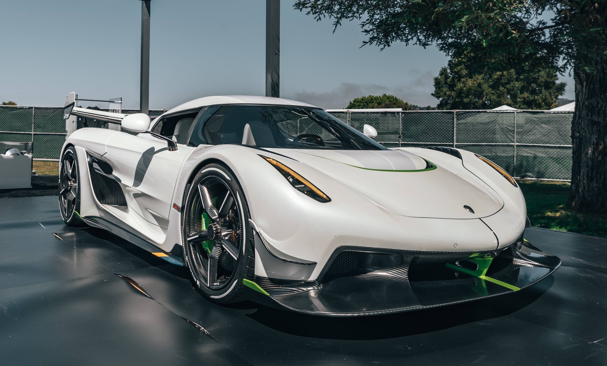

Projekt information
- Kategorie: Machine Learning
- Projektdatum: Aug, 2022
- Projekt URL: Github
AutoScout Car Price Prediction
Willkommen beim „AutoScout Car Price Prediction“.Erstellung eines Preisvorhersagemodells unter Verwendung von Merkmalen für verschiedene Marken und Modelle
Projektanforderungen
Bestimmt:
- Auto Scout-Daten, die für dieses Projekt verwendet wurden und 2019 vom Online-Autohandelsunternehmen (https://www.autoscout24.com) abgekratzt wurden, enthalten viele Merkmale von 9 verschiedenen Automodellen.
- In diesem Projekt verwenden Sie den bereits vorverarbeiteten und für Algorithmen aufbereiteten Datensatz.
- Das Ziel dieses Projekts ist es, maschinelle Lernalgorithmen zu verstehen. Daher benötigen Sie keinen EDA-Prozess, da Sie an den bearbeiteten Daten arbeiten.
- In diesem Senario schätzen Sie die Preise von Autos mithilfe von Regressionsalgorithmen.
Fähigkeiten benötigt
Python
Pandas
plotly
Matplotlib
NumPy
Scipy
Random Forest
XG Boost
GridSearchCV
Techniken
Major Tasks:
Screenshots